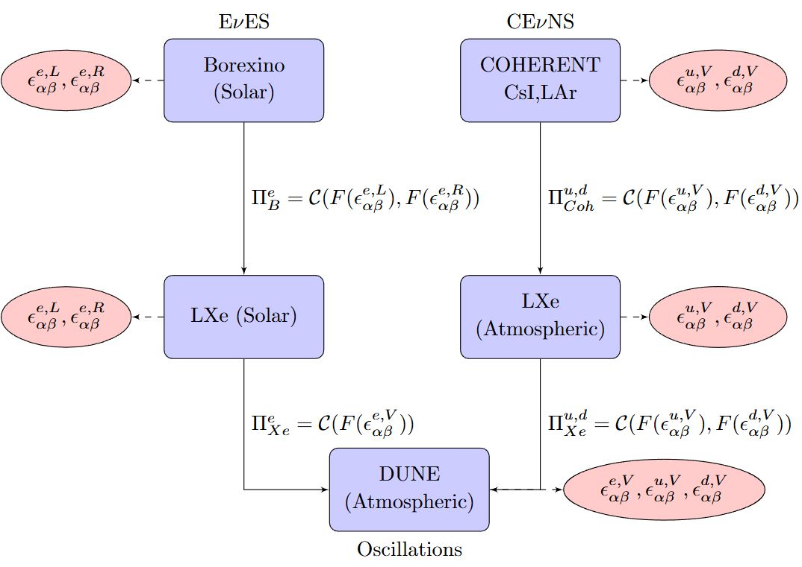
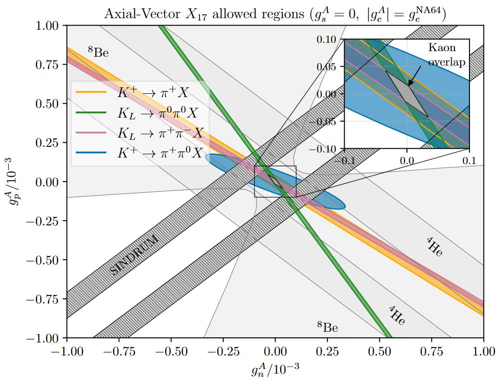
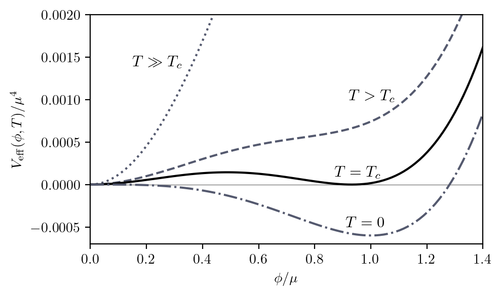
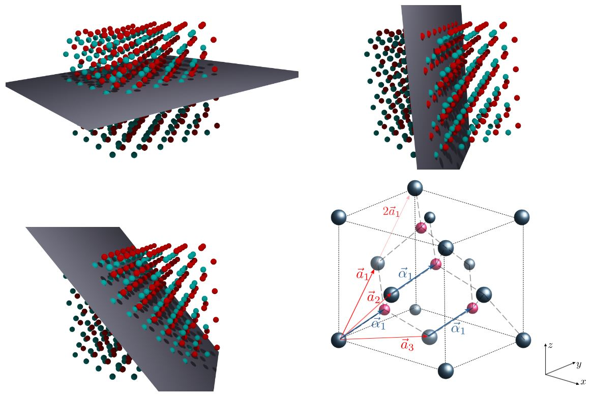
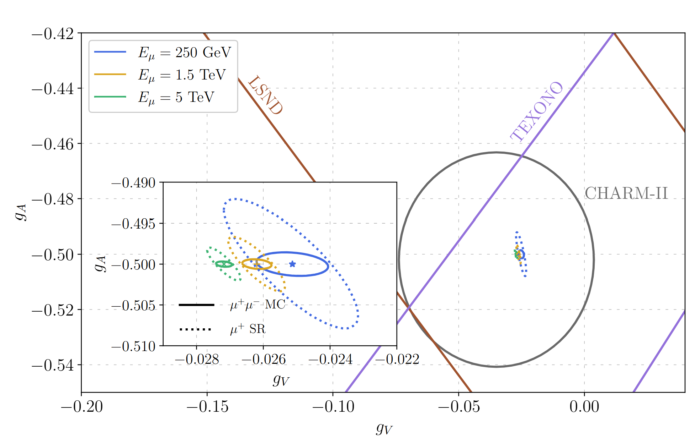
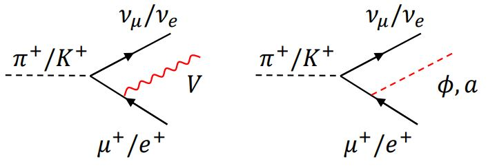
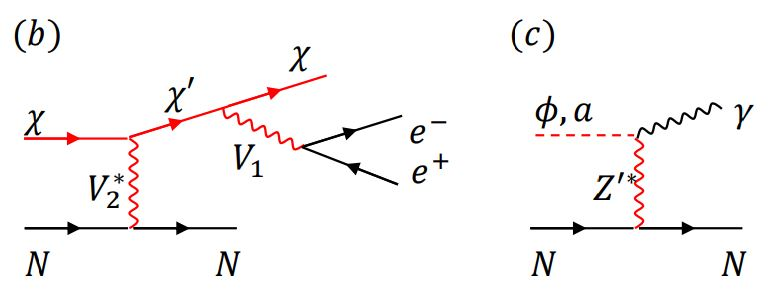

Research Areas
Neutrino Phenomenology
I study how neutrino experiments can reveal interactions beyond those predicted by the Standard Model. Combining measurements of neutrino scattering and oscillations helps distinguish effects that can look nearly identical in any one experiment. I also study how light mediators could change neutrino signals at reactors and DUNE, and how new forces could make heavy neutrinos easier to detect.

Chiral perturbation theory in neutrino phenomenology and searches for new physics
I am interested in using chiral perturbation theory to interpret neutrino scattering data and search for new physics. In the quasielastic region, chiral methods help model how neutrinos scatter from individual protons and neutrons and how interactions with nucleon pairs affect the measured energy and angle of the outgoing lepton. Beyond the quasielastic channel, chiral perturbation theory can also describe single-pion production near threshold. Rare kaon decays offer another way to test for new particles and forces.
I also use chiral perturbation theory to connect baryon-number-violating interactions at the quark level to possible decays of neutrons and hyperons into dark-sector particles. I compare limits from binary pulsar timing, which is sensitive to neutron-star mass loss, with laboratory searches for two-nucleon decay.

Intersection of Astrophysics, Cosmology, and Particle Theory
I study how particle physics in the early universe can leave signals we can look for today. In particular, I ask when a phase transition could produce both gravitational waves and primordial black holes.
I also study baryogenesis, which asks how the early universe came to contain more matter than antimatter. I investigate models in which interactions that violate baryon number could help explain both this imbalance and the abundance of dark matter.

Axion-like particles
I develop strategies to search for axion-like particles at reactors, spallation sources, and accelerator beam dumps, and led the theory and signal modeling for a Coherent CAPTAIN-Mills search. I also study how to detect solar axions in crystals and liquid xenon.

Muon Colliders
I study the neutrino beams produced when muons decay in storage rings and colliders. These beams could let us measure neutrino scattering precisely and test how the weak interaction changes with the scale of the collision.

Studying Anomalies
I use unexpected features in experimental data to guide the development of new theories. The MiniBooNE excess motivated us to ask whether new particles produced in charged meson decays could explain the signal and how other experiments could test that idea.


Resources
Reccommended reading
Byckling, Kajantie, Particle Kinematics
Cheng & Li, Gauge theory of elementary particle physics
Interactive explainers for concepts in optimization and machine learning on distill.pub
Deep Learning Book by Goodfellow, Bengio and Courville: https://www.deeplearningbook.org/
Notes on SU(2) Reps and Neutrino Mass Models (TASI 2020)
Some (unfinished) notes on Chi^2, Pseudoexperiments, and Confidence Levels
Contact
Email: athomps3@uci.edu